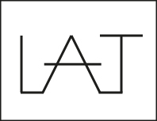

Bienvenue sur mon site !
Pour me présenter : je m’appelle Lucca-Anghjulu, j’ai 18 ans, et je suis actuellement en première année de BUT MMI. La création de ce site web rentre également dans mes projets de formation à réaliser. Ma signature, créée avec Adobe Illustrator, est présente en fin de page pour que l’on puisse mieux m’identifier à l’avenir. Ce projet de site Web parle principalement de mes centres d’intérêt recensés juste en-dessous de ma propre photo, ainsi que de mes capacités et de mes compétences, disponible dans le menu A propos, afin que vous puissiez mieux me connaître. Un court menu pour me contacter est également disponible en fin de page.
Centres d’intérêt
J’aime tout ce qui est jeux vidéo, cuisine, informatique, jouer aux échecs ou encore dessiner. C’est ce qui remplit principalement mon temps libre. Lorsque je ne travaille pas ou que je n’ai pas la tête à travailler, je me consacre à un de mes centres d’intérêt pour passer le temps. La plupart du temps, ils me permettent d’apprendre des choses chaque jour, car j’estime que chaque domaine a ses spécialités. L’informatique est riche en fonctionnalités et on peut donc en apprendre beaucoup chaque jour. D’ailleurs, c’est pourquoi j’en ai désormais fait ma formation : elle propose un tas d’activités diversifiées mais également de faire de la programmation et de visiter un peu plus l’univers de l’informatique, ce qui paraissait intéressant pour moi.


A propos
Je suis généralement doué pour coder certains programmes simples en langage HTML,cependant lorsque je me retrouve en difficulté je n’hésite pas à me renseigner auprès d’autres sites Internet ou de mes profs, pour mes projets par exemple. Le codage me parait intéressant car il permet non seulement de créer des sites Web comme je fais en ce moment même, mais aussi d’inventer des programmes qui pourraient peut-être, à un haut niveau, servir dans la vie de tous les jours. Je possède également de bonnes capacités ainsi qu’une bonne culture dans le domaine cinématographique. Etant plutôt passionné de cinéma, donc cinéphile, j’ai tendance à bien jouer mon rôle devant la caméra, à condition bien sûr que je maîtrise bien mon texte. Ma formation propose souvent aux étudiants d’écrire des scénarios, ce que j’arrive à faire convenablement, suivant mon imagination.

Contact
Pour me contacter, vous pouvez simplement me joindre par mon mail personnel, ou par Discord. Il suffira alors de m’envoyer une invitation. Je préfère la boîte personnelle plutôt que la boîte universitaire, car c’est en général là où je reçois les mails les plus importants. Mon temps de réponse est généralement assez rapide, voire immédiate : cela dépend du mail que j’ai reçu. On dit souvent que les réponses rapides sont bien vues en entreprise, donc cela représente un avantage !
Ma signature, créée et imaginée grâce à Adobe Illustrator et Adobe Photoshop.


Pour me contacter via les réseaux sociaux :